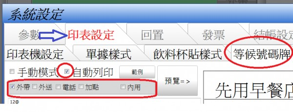

只想在客人外帶時印出等候號碼牌?
有兩個問題
1. 當我在編輯工具裡面修改了菜單, 存檔之後,
我發現第一畫面會往右邊偏移了一點
然後第二畫面會往右邊偏移了一點, 跑到第一畫面了
2. 小弟現在想使用等候號碼牌的功能 (店內外帶的客人實在太多了)
, 如果希望只有 "外帶" 功能 會額外列印出等候號碼牌,
(內用, 電話, 外送都不需要印等候號碼牌)
請問這樣的設計可以怎麼實現 ?
另外, 由於店內現在使用系統還沒上手, 我是打算等到系統使用順利之後
我們可以再談看看要提供什麼樣的照片
1 個回答
您好
1.站長無法重現您描述的情況 不過有做部分的程式調整 請至首頁下載更新
如果更新後問題還是沒有解決 請麻煩貼上第一二螢幕的照片
2.站長在自動列印號碼牌加入參數 只需在外帶打勾即可

3.有無提供照片都沒有關係 站長對每個支持購買先用的用戶都充滿感謝